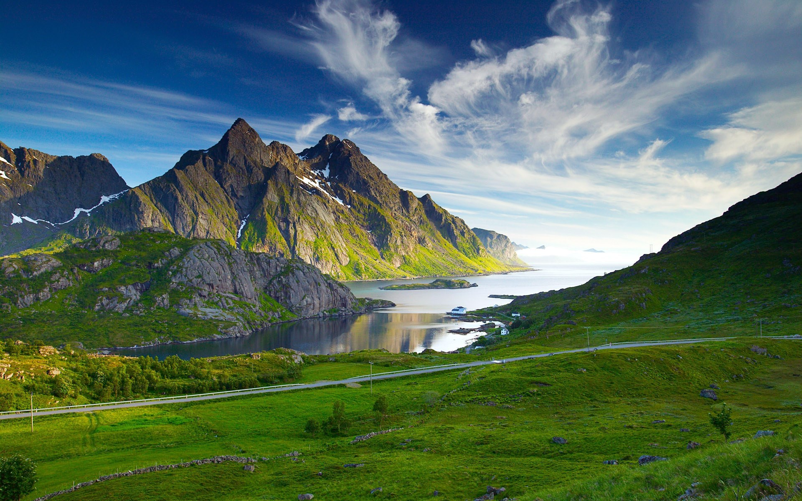
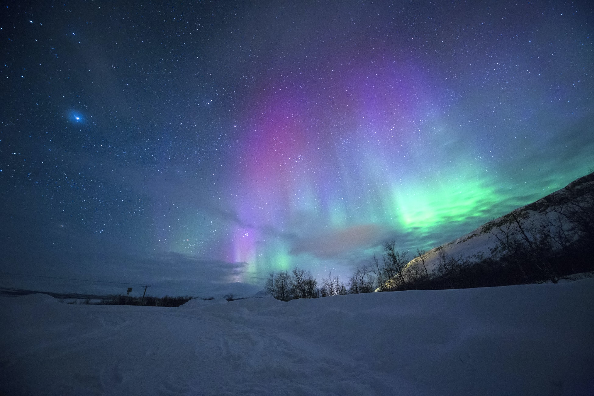

Mountains of Himmeltindan
Himmeltindan has the highest elevation of any mountain on the central Lofoten island of Vestvågøya. One of the highest peaks in the region and the highest on its island. It provides the best view of the southeast chain of Lofoten that we saw during our stay.

Northern Lights at Tromsø
Tromsø is the largest city in Northern Norway. With a location at nearly 70° north, and between fjords, mountain peaks, and islands, it is a prime starting point for your Arctic adventure. The city is situated in the middle of the auroral oval, the area with the highest probability of seeing the northern lights.